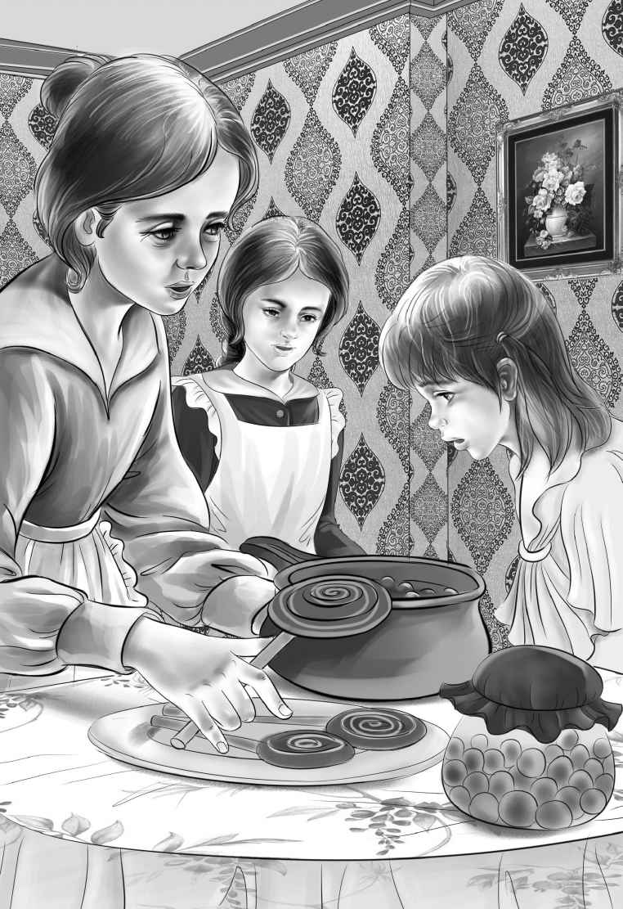

Chapter 3 Trouble Brewing
在“詹姆斯·H·奥登号”上度过的第一个清晨，阳光明媚。班尼一穿好衣服就爬到梯子上，把船屋的名字改成了“亨利·J·奥登号”。
“船长，现在整条船都是你的了！”他从梯子上爬下来，对着亨利喊道。
亨利跑到甲板上，当他看到船屋的名字时，噗嗤一声笑了：“大副，你真有才！你快来欣赏一下吧！”
班尼抬头看去，自己也笑出声来，原来，他把名字摆成了“号登奥·J·利亨”！
“这个嘛，我觉得看起来没什么问题。”班尼一边说着，一边再次爬上梯子，“不过，为了大家，这个顺序还是颠倒过来为好。”很快，他就把这些字母按顺序摆好了。
杰西透过厨舱里的窗户向外张望着，“这条船上真是既凉爽又惬意，也许是因为我们在水上的缘故吧。哦，船屋漂得有些歪了！”
“别担心，杰西，”亨利说，“大河先生说很安全。船身会自动地调整过来，而且，我还可以用撑杆把它撑回来。”
果然，船屋根本用不着亨利去撑，自己缓缓地调整了过来。
亨利走进船舱，抬头看了看，不禁说道：“瞧，那上面有一只渔竿，还有一张长手柄的渔网。我想我可以去钓鱼了。”
“亨利，这个天可不适合钓鱼，”班尼说，“阳光太强了。”
“没事的，小班尼，”亨利回答他，“不管怎么样，我都要碰碰运气。”他一边收拾渔竿和渔网，一边盯着渔线和渔钩。
“那你打算用什么当鱼饵呢，亨利？”班尼追问。
“哦，这个我还没想好，”亨利说，“这一次，我只能用手头的东西凑合了。”
班尼想了想，说：“我们昨天不是看到了很多小鱼吗？或许可以用那张网捕一些回来。”
“小班尼，你太聪明了！”亨利说，“小鱼就是最好的诱饵了。它们经常游到岸边，那里水也不深。我再把船撑近一些。”
两个男孩动手撑起船来。来到浅水区后，两人朝水里看去：真的，水里游动着上百条小鱼！
“这个简单！”班尼说着，弯腰用渔网一兜，一下子捞上许多小鱼来。
“准备完毕！”亨利一边说，一边把船撑回了深水区。他搬了两把椅子，放在船尾的甲板上，接着把一条小鱼穿在渔钩上，将带着渔钩的渔线抛进了水里，然后，他握着沉重的渔竿，坐在了椅子上。班尼也在他身边坐了下来。船屋缓缓地漂着。一切都是那么宁静。
爷爷和维莉来到了船头的甲板上，两人相视一笑。维莉说：“我可不指望今天中午能吃到鱼。”
爷爷点了点头，说：“如果是指从河里钓鱼吃的话，你说得不错。不过，杰西那里有鱼罐头给咱们吃。”
这时，杰西也来到甲板上，和爷爷、维莉一起望着河面。
“这次旅行简直是有史以来最宁静惬意的一次。”杰西说道。
爷爷坐在甲板的椅子上说：“没错。”
半个小时过去了。
班尼在哥哥的耳边叽叽喳喳地说个不停。太阳愈发炙热了，然而还是没有任何动静，一条鱼也没有咬钩。
“我担心的就是这个呢，”亨利说，“都不知道这条河里到底有没有鱼。”
“肯定有啊，亨利，”班尼说，“如果没有的话，船屋里怎么会有渔竿呢？要是有两根就好了。”
“来，班尼，你用这个吧，”亨利说着，把自己手中的渔竿递给了弟弟，“我们可以轮流来，反正什么也钓不到。”
班尼接过了渔竿。渔线依然漂在水上，那条小鱼仍然挂在钓钩上。
杰西和维莉走上前来，想看看有没有鱼儿上钩，结果她们俩相视而笑。
班尼转过身，皱起了眉头，说道：“钓得不怎么顺利呢！不过钓鱼嘛，一定要有耐心才行。”就在这时，渔线似乎被什么东西拉动了。
“抓到你了，好家伙！”班尼冲那条上钩的鱼大喊。渔线被拉了起来，只见渔钩上挂着一条银色的大鱼。
“是鲈鱼！”亨利说，“别让它跑了，小班班！它会挣脱跳回水里的！”
班尼的动作很快。他猛地一拉，那条鱼就顺着渔竿被拽上了甲板，活蹦乱跳的。突然，一大群海鸥出现在船屋上空，一边盘旋，一边鸣叫着。
“别动我的鱼！”班尼朝那些鸟儿叫道，“你们怎么知道我钓到鱼了？”
这的确是个谜。前一秒视野中还没有海鸥的影子呢，下一秒就一下子来了一百多只。海鸥落在船屋的顶上、栏杆上。它们一点也不害怕，飞来飞去地寻找着食物。
班尼把钓到的鱼小心翼翼地送进了厨舱。
杰西说：“这些海鸥真漂亮啊，可惜没有东西喂给它们。等等，这里有一块香蕉皮，它们可能会喜欢。”她使尽力气把香蕉皮朝远处的水里扔去，一只海鸥用嘴巴接住，杰西又扔了一块。
亨利笑着说：“依我看，海鸥一定是杂食动物。”
班尼从厨舱里拿了一些面包屑，每次朝扶栏外面抛洒时，都会有海鸥在食物落水之前将它一口咬住。
亨利走进船舱，把相机拿了出来，“这张照片拍得不错。喏，你们两个姑娘正朝海鸥扔垃圾呢。”
大家全都笑了起来。
当亨利看到班尼钓上来的那条鱼时，不禁赞道：“这条鲈鱼可真大，足够我们全家人吃了。小班班，我来帮你清洗它。鱼头和鱼尾可以送给海鸥们当作甜点了。”
用过了一顿美味的午餐，杰西叹道：“天哪！我们又得靠岸了，得去买点冰块和牛奶了。”
奥登先生说：“我也有封信要寄。”
于是，亨利开始寻找可以靠岸的地方。
船屋来到了彭福镇，杰西说：“那我们先去邮局，最后再去买冰块和牛奶。这样的话冰块就不会化掉。”
大家将“亨利·J·奥登号”上了锁，抛了锚，把缆绳系好。一家人沿着码头边的小路，朝小镇走去。
正在这个时候，他们看到一辆熟悉的黑色轿车从正街上呼啸而过，很快就消失在他们的视线里。
“又是那辆黑色的小轿车！”班尼叫道。奥登一家人想起来了，当时在河间路上，就是这辆车差点与他们相撞。班尼也记起来了，那天他们在那个小餐馆吃饭时，停在门口的就是这辆车！
“开这辆车的人总是火急火燎的！”杰西抱怨道。
“不知道是谁的车子，”亨利说，“像彭福这样的小镇，肯定不会有这么豪华的车。”
“嗯，也许我们可以弄清楚车主是谁。”爷爷说。
奥登一家沿着正街朝邮局走去。他们刚推开邮局的门，只听柜台后传来一个男人的声音：“这是您要的邮票，扬格太太。”
只见一个身穿黑色长裙的小个子女士把钱放在柜台上，拿走了那张邮票。
奥登一家礼貌地打量着她，但扬格太太却没有抬眼，像影子一样从门口轻悄悄地走了出去。
奥登先生买了一张航空邮票，一些贴好邮票的信封，还有很多明信片。
班尼说：“我觉得，刚刚离开的那位太太不怎么写信，因为她只买了一张邮票。”
“说得不错，”店员说，“扬格太太算不上穷，但是她的烦心事也很多。她带着儿子和她的姐姐一起生活，就住在这条街的尽头。她们开了一家糖果店。”
“我们最好能去那儿买点糖果。”亨利说。
“那你得尽快把它们吃光，”杰西说，“船上可没地方放糖果。”
“你们是大河先生的租户，对吧？”店员微笑着说。
“你是怎么知道的？”班尼问道。
“哦，船屋的租客都会到我这儿来，”店员说，“我们喜欢结交新朋友。彭福是个小地方，这里的人和事，我们再熟悉不过了。”
“我们刚才看到一辆很大的黑色轿车经过，”班尼说，“那是谁的车啊？”
“这我可不知道，”店员笑了起来，“只有这一件事，我不太了解。我以前也见过它，但是它真的不是彭福镇上的车。”
奥登一家离开了邮局，朝着糖果店出发了。推门的一瞬间，门上挂着的铃铛便响了起来。
“哇，这家店真漂亮！”维莉惊叹道。
店里的墙纸是粉白相间的条纹，白底粉色圆点的窗帘上镶着褶皱的花边，苏打水柜台边上摆着两张小桌子和几把椅子，架子上都铺着花边纸。盛着糖果的盒子四处可见。
店里空无一人，但很快，一位夫人出现了——就是刚才的扬格太太。只见她在黑色的长裙上围了一个围裙，看上去很疲惫。杰西暗想：她看上去好像哭过。
扬格太太挤出一个微笑，说道：“我很高兴你们喜欢我的小店。几里之外的人都会到我这店里来呢！”
“糖果是您自己做的吗？”奥登先生问道。
“哎，其实是我姐姐在做，”扬格太太回答道，“我只是帮忙。”
班尼朝着扬格太太露出一个灿烂的微笑。他说：“我一直想知道，巧克力上那些一圈一圈的东西是怎么做出来的，您知道吗？”
“我当然知道，”她答道，“你愿意看看它是怎么制作出来的吗？我姐姐正在做呢！”
“太幸运了！”班尼说，“我当然愿意！”
亨利悄悄对杰西说：“这个小班班啊，真是想什么就有什么！”
扬格太太撩起一面帘子，带领大家进了做糖果的厨房。
扬格太太的姐姐正站在一锅巧克力跟前，她头发灰白，比扬格太太年纪大，但是脸上的愁容和疲惫却不比妹妹少。
奥登一家在一旁看着她忙活，只见她用叉子串起一个粉色糖心，把它浸在融化的巧克力里，接着把裹好巧克力的糖心拿出来，放在蜡纸上。最后，她把叉子竖起来，让融化的巧克力一圈一圈地绕在糖的顶端。
“噢，维莉，”杰西说，“多有趣啊！咱们以后也可以试试。我都不知道，糖果是这么做出来的呢！”
糖心有粉色、白色、黄色、浅绿色和紫罗兰色。扬格太太的姐姐朝维莉微微一笑，说：“你叫维莉？那这个最适合你了。”说着，她拿起一个浅紫色的糖心，裹上了巧克力，又在顶上做了个圈圈，“你得等它凉下来再吃。”

“噢，谢谢您。”维莉说道。
“咱们一边等，一边喝杯奶昔吧？”奥登先生提议。
扬格太太再次露出了微笑，说：“你一定会喜欢我们这里的奶昔的。糖浆都是用我们自己的配方做的。”
杰西回到桌旁，说：“好主意！这次，咱们可以把甜点装进肚子里，带回家去。”
奶昔的味道好极了。
奥登先生说：“我的这杯吃起来真的有股新鲜草莓的味道。”
“这个自然，”扬格太太说道，“我们的后院里就种着草莓呢！”
大家买了一些糖果，但没买巧克力——船上太热了，巧克力放不了太久。不过扬格太太还是把浅紫色的巧克力送给了维莉，又分别给其他人都拿了一份。
奥登一家正准备离开，班尼突然问扬格太太：“我们从街上过来的时候，看见了一辆很大的黑色轿车，开得飞快。您知道车的主人是谁吗？”
令他吃惊的是，扬格太太的脸唰的一下红了，看上去比之前更加焦虑不堪。她别过头去，说了一声：“我只知道，那不是镇上的车。”
“哦，非常抱歉，”班尼说，“这不关我的事，我不该打听的。”
“没关系的，”扬格太太说，“欢迎下次再来。”接下来她说的话谁也没有听清，因为她几乎是在自言自语。杰西只听到了“担心”这个词——只有这个。
奥登一家走到半路的时候，班尼开口了：“我不是故意让她担心的。我只是想，她也许知道驾车的人是谁。”
维莉轻轻地说了一句：“我觉得她知道。”
那一夜，班尼恍恍惚惚地快要睡着了，马上就要进入梦乡时，他耳边突然清晰地回响起扬格太太的那句话：“我只是担心我的儿子。”
儿子？什么儿子？不知不觉，班尼睡着了。